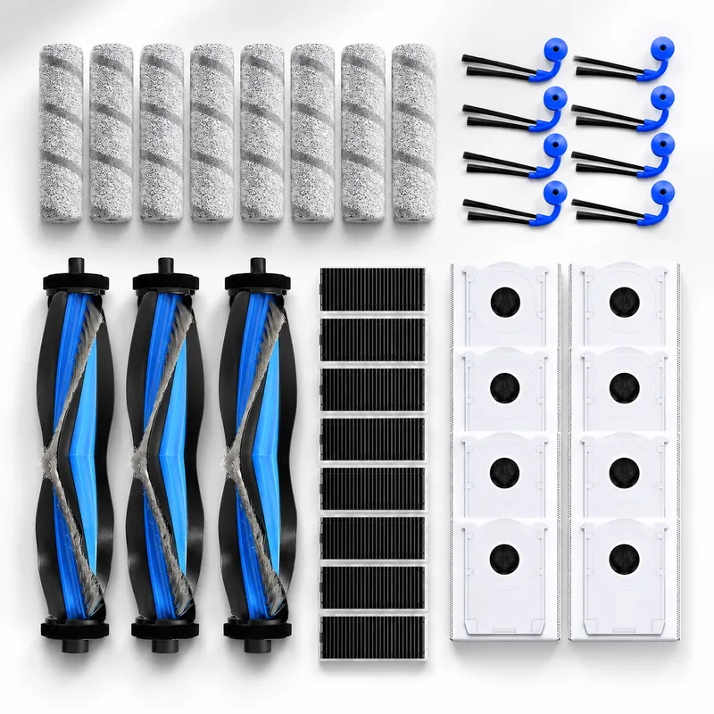
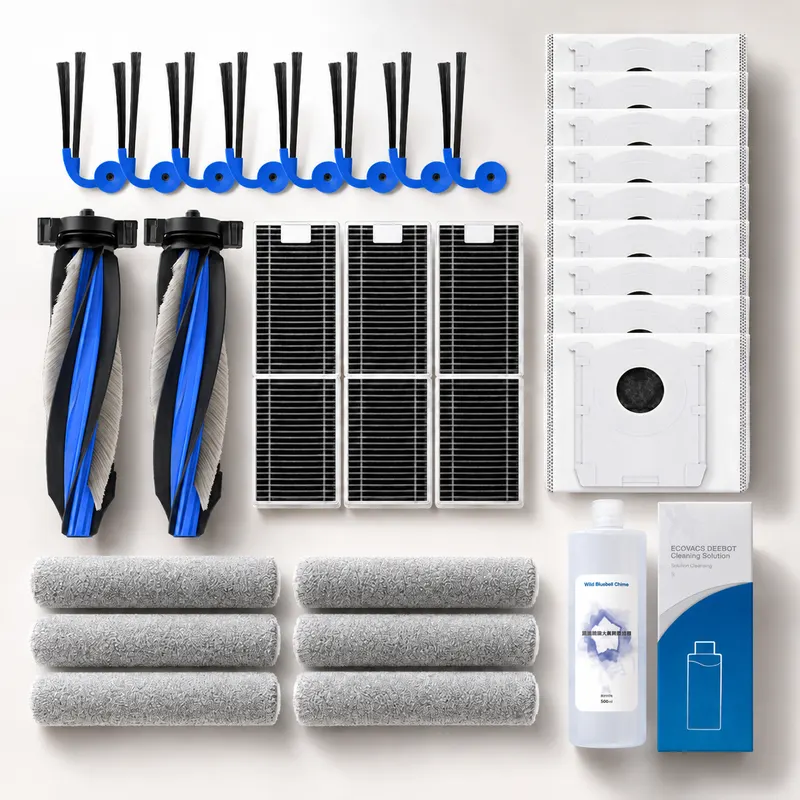

에코백스
에코백스 디봇 X11 프로 옴니 소모품 교체 주기｜롤러 걸레·필터 1년 세트 비교
에코백스 디봇 X11 프로 옴니 소모품 교체 주기｜롤러 걸레·필터 1년 세트 비교 핵심 규격·교체 기준 요약. 요즘 집에서 겪기 쉬운 플래그십 에코백스 디봇 X11 프로 옴니를 매일 돌리다

에코백스 디봇 X11 프로 옴니 소모품 교체 주기｜롤러 걸레·필터 1년 세트 비교 핵심 규격·교체 기준 요약. 요즘 집에서 겪기 쉬운 플래그십 에코백스 디봇 X11 프로 옴니를 매일 돌리다

에코백스 T90 프로 옴니·T80 옴니 소모품 교체 주기｜롤러 걸레 1년 세트 비교 핵심 규격·교체 기준 요약. 요즘 집에서 겪기 쉬운 실시간 오수 회수 롤러로 바닥을 뽀득하게 닦아주던 에코백스 T90 프로 옴니(또는 T80 옴니)의 롤러 줄무늬가 눌리고 앱 소모품...

에코백스 디봇 스테이션 물걸레 세척 냄새 줄이는 전용 클리너 1L 1병·2병 보충 가이드 핵심 규격·교체 기준 요약. 에코백스 디봇 올인원 로봇청소기로 거실과 주방 물걸레 청소를 매일 돌리다

온수 세척·열풍 건조 스테이션용 샤오미 X20 MAX 원형 걸레·더스트백 1년 소모품 세트 핵심 규격·교체 기준 요약. 고온 물걸레 세척과 열풍 건조로 주방 바닥까지 깔끔하게 닦아주는 샤오미 로봇청소기 X20 MAX라도 본체 먼지통 안의 슬림형 헤파필터는 따로 분리해...
에코백스 디봇 X11 프로 옴니 원통형 롤러 걸레·V자 브러시·필터 24시간 교대 건조 세트 핵심 규격·교체 기준 요약. 강력한 사이클론 흡입과 원통형 롤러 물걸레 세척을 결합한 에코백스 디봇 X11 프로 옴니(옴니사이클론)는 롤러 걸레의 파일 탄성과 다크그레이 필터...
롤러 걸레와 전용 세정제를 함께 비축하는 에코백스 T90 프로 옴니·T80 옴니 1년 세트 핵심 규격·교체 기준 요약. 회전하는 원통형 롤러에 깨끗한 물을 분사하고 오수를 바로 긁어내는 에코백스 디봇 T90 프로 옴니(및 T80 옴니)는 롤러 슬리브의 흡수력과 V자...
에코백스 디봇 로봇청소기 물걸레 냄새 줄이는 전용 클리너 1L 정량 관리 핵심 규격·교체 기준 요약. 에코백스 디봇 올인원 로봇청소기로 거실과 주방 물걸레 청소를 매일 돌리다
온수 세척 후 본체 필터까지 챙기는 샤오미 X20 MAX 1년 소모품 세트 관리 핵심 규격·교체 기준 요약. 고온 물걸레 세척과 열풍 건조로 주방 바닥까지 깔끔하게 닦아주는 샤오미 로봇청소기 X20 MAX라도 본체 먼지통 안의 슬림형 헤파필터는 따로 분리해 말려 주어...
에코백스 디봇 X11 프로 옴니(옴니사이클론) 롤러 걸레·V자 브러시 1년 세트 관리 핵심 규격·교체 기준 요약. 강력한 사이클론 흡입과 원통형 롤러 물걸레 세척을 결합한 에코백스 디봇 X11 프로 옴니(옴니사이클론)는 롤러 걸레의 파일 탄성과 다크그레이 필터의 통기...
실시간 오수 회수 롤러 쓰는 에코백스 T90 프로 옴니·T80 옴니 1년 세트 관리 핵심 규격·교체 기준 요약. 회전하는 원통형 롤러에 깨끗한 물을 분사하고 오수를 바로 긁어내는 에코백스 디봇 T90 프로 옴니(및 T80 옴니)는 롤러 슬리브의 흡수력과 V자 브러시...

샤오미 X20+ vs X20 Pro vs X20 MAX 소모품 차이점과 X20 Pro 1년 세트 핵심 규격·교체 기준 요약. 샤오미 X20 시리즈는 이름이 비슷해 보여도 X20+, X20 Pro, X20 MAX 세 모델의 스테이션 구조와 먼지통 필터·브러시 세부 규격...

소파·침대 밑 낮은 틈새 청소하는 에코백스 T50 프로 옴니 브러시·필터 관리 핵심 규격·교체 기준 요약. 초슬림 본체 설계로 손이 닿지 않는 낮은 소파나 침대 프레임 밑까지 깊숙이 들어가 청소하는 에코백스 디봇 T50 프로 옴니는 가구 밑에 쌓여 있던 묵은 솜먼지와...
샤오미 로봇청소기 X20 MAX 물걸레·브러시 건조와 1년 세트 보관법 핵심 규격·교체 기준 요약. 온수 세척과 열풍 건조 기능을 갖춘 샤오미 로봇청소기 X20 MAX는 주황색 메인브러시와 원형 그레이 물걸레 패드, 슬림형 필터를 주기별로 교대 관리하면 청소 성능을...
에코백스 디봇 T90 프로 옴니 롤러 걸레 건조와 1년 세트 관리법 핵심 규격·교체 기준 요약. 원통형 롤러 물걸레로 바닥을 닦아내는 에코백스 디봇 T90 프로 옴니(T80 옴니 호환)는 롤러 슬리브의 파일 탄성과 V자 메인브러시 상태를 주기적으로 함께 점검해 주면...

샤오미 로봇청소기 X20+ 1년 세트 구성과 브러시·물걸레·더스트백 관리법 핵심 규격·교체 기준 요약. 가성비 올인원 로봇청소기로 많이 쓰이는 샤오미 X20+는 물걸레 패드를 바람으로 말리는 방식이라 주기적으로 패드와 필터를 분리해 햇볕·그늘이 통하는 선반에서 교대...
샤오미 로봇청소기 X20 Pro 1년 세트 구성과 물걸레·더스트백·필터 관리법 핵심 규격·교체 기준 요약. 올인원 스테이션으로 먼지 비움과 물걸레 세척·건조를 지원하는 샤오미 X20 Pro는 소모품 교체 주기를 미리 맞춰 두면 1년 내내 손이 덜 가는 자동 청소를 누...
에코백스 디봇 T50 프로 옴니 1년 세트 구성과 물걸레·세제·더스트백 관리법 핵심 규격·교체 기준 요약. 슬림한 본체로 가구 아래까지 꼼꼼히 청소하는 에코백스 디봇 T50 프로 옴니는 회전 물걸레 패드와 사이드브러시, 더스트백을 주기적으로 교체해 주면 좁은 공간 청...
에코백스 디봇 X11 프로 옴니 1년 세트 구성과 롤러 물걸레·브러시 관리법 핵심 규격·교체 기준 요약. 바닥을 일정한 압력으로 닦아내는 원통형 롤러 물걸레 기종은 롤러 파일의 탄성과 측면 체결 캡 상태를 주기적으로 살펴보면 닦임 품질을 오래 유지할 수 있습니다.
에코백스 DEEBOT 세정제 1L 라벨 대조법과 1병·2병 선택 기준 핵심 규격·교체 기준 요약. 키가 있는 1L 원통형 용기 규격과 수납장 높이 확인: 에코백스 전용 1L 세정제는 슬림한 원통형 용기에 하얀 스크류 캡이 결합된 형태여서 좁은 다용도실 수납장 칸에도...
[2026-11-14 점검 #119] 샤오미 로봇청소기 X20 MAX 1년 세트 구성과 브러시·필터 관리법 (1년 세트 (세제 미포함)·6개월 세트 (세제 미포함) 옵션) — 샤오미X20MAX, 샤오미로봇청소기소모품, 샤오미X20소모품1년세트 핵심 규격 요약
[2026-11-13 점검 #117] 에코백스 T90 프로 옴니 1년 세트 구성과 롤러 물걸레·필터 관리법 (1년 세트·6개월 세트 옵션) — 에코백스T90프로옴니, 에코백스T80옴니, 에코백스소모품1년세트 핵심 규격 요약
샤오미 로봇청소기 X20 MAX 1년 세트 구성과 브러시·필터 관리법 핵심 규격·교체 기준 요약. 샤오미 로봇청소기 X20 MAX는 오렌지색 V자 메인브러시와 가로로 긴 슬림형 블랙 프레임 필터, 크라프트지 칼라 더스트백을 사용합니다.
에코백스 T90 프로 옴니 1년 세트 구성과 롤러 물걸레·필터 관리법 핵심 규격·교체 기준 요약. 에코백스 디봇 T90 프로 옴니와 T80 옴니는 회전 원판 대신 원통형 극세사 롤러 물걸레와 블루·블랙 V자 메인브러시, 곡선형 2암 블루 사이드브러시를 사용합니다.
에코백스 DEEBOT 전용 세제 1L 보충 전, 투입 방식 확인과 1병·2병 선택 핵심 규격·교체 기준 요약. 에코백스 정품 세제 1L 옵션별 구성과 확인 기준: 대용량 1L 원통형 병 규격으로, 스테이션 투입 방식과 청소 주기에 따라 수량을 선택할 수 있습니다.
에코백스 T80·T90·X8·X11 세정제 1L, 1병·2병 옵션과 투입 전 체크 핵심 규격·교체 기준 요약. 에코백스 디봇(DEEBOT) 시리즈의 물걸레 세척용 세정제를 준비할 때는 먼저 바닥 청소용 로봇 모델인지, 대용량 1L 구성인지 확인해야 합니다.
에코백스 X8 PRO OMNI 세제 안내가 다를 때, 설명서 모델·지역 확인법 핵심 규격·교체 기준 요약. 판매자 안내｜제이상점이 제조사 공식 자료와 현재 자사 상품·옵션을 조사해 직접 작성했습니다.
에코백스 DEEBOT 세제 수령 후, 주문 옵션과 병 라벨 대조하기 핵심 규격·교체 기준 요약. 판매자 안내｜제이상점이 제조사 공식 자료와 현재 자사 상품·옵션을 조사해 직접 작성했습니다.
에코백스 T80 OMNI·X8 PRO OMNI 세정액, 정수통에 넣으면 될까요? 핵심 규격·교체 기준 요약. 판매자 안내｜제이상점이 제조사 공식 자료와 현재 판매 옵션을 조사해 직접 작성했습니다.
에코백스 세제 구매 전, DEEBOT과 WINBOT 제품부터 구분하세요 핵심 규격·교체 기준 요약. 판매자 안내｜제이상점이 공식 자료와 현재 판매 구성을 확인해 작성했습니다.